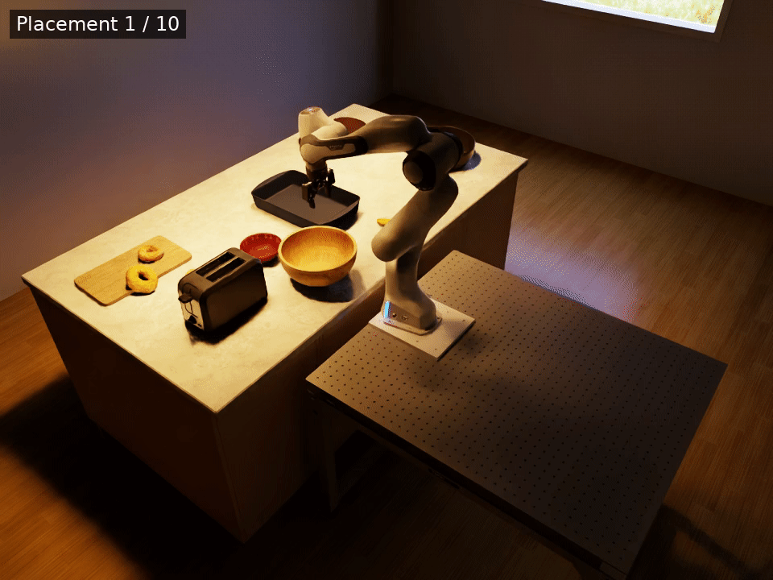
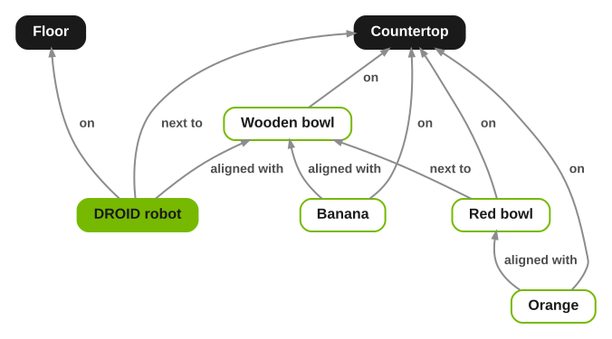

Kitchen Environment#
Study#
We compare how a coding agent authors the same kitchen pick-and-place evaluation environment with and without Arena. The baseline uses Isaac Lab without Arena’s evaluation-oriented building blocks.
TL;DR: With Arena, the agent:
reached a working environment approximately 4× faster,
wrote no custom Python code,
used Arena’s relational placement system to achieve highly varied layouts,
and reused Arena’s existing task definitions and success conditions to define composite tasks.
The agent’s task#
The agent receives a single natural-language prompt describing a kitchen pick-and-place evaluation environment: two pieces of fruit must be placed in two bowls on a cluttered kitchen countertop.
Prompt given to the agent
Can you build a new evaluation environment in a kitchen? The evaluation will require an agent
to perform a composite pick-and-place task. Save the environment definition to
isaaclab_arena_environments/kitchen_bench/kitchen_bench_round2_peninsula_banana_and_orange_in_bowls.yaml.
Use the Replicator peninsula kitchen with the DROID robot mounted on a stand positioned on the floor
along the island’s long side, with the robot facing the island. Set the stand height to 0.8 m. Put two bowls on the
countertop, one behind the other from the robot’s view: a wooden bowl closer to the robot and a
red YCB bowl farther away. Put a banana next to the wooden bowl and an orange next to the red
bowl, both on the countertop. The layout should vary as much as possible between resets while
keeping this arrangement: the robot should be placed anywhere along the island’s long
side, with the bowls and fruit repositioned along the counter to match. The group of bowls and
fruit can be placed on either side of the existing countertop objects.
The task is to put the banana in the wooden bowl and the orange in the
red bowl, and it only succeeds when both are in their bowls. Don’t look at the remote repo or
GitHub.
The agent’s solution#
The agent wrote a 140-line YAML environment definition that combines Arena’s placement relations with two existing pick-and-place tasks. The robot, bowls, and fruit are repositioned together along the counter between resets, preserving their relative arrangement.


Ten reset layouts of the agent-authored environment.#


The spatial relations the agent wrote in the environment YAML.#
Analysis#
Let’s compare the solution above to the baseline solution written without Arena’s evaluation building blocks.
4× faster
to a working environment (34 min vs. 8 min)
0 Python
authored for Arena (140 lines of YAML)
0 debug code
vs. about 950 throwaway lines with Isaac Lab
Measurement |
Without Arena |
With Arena |
Details |
|---|---|---|---|
Authoring time |
34 min |
8 min 4× faster |
Time until the agent reached an environment that passes task success checks. |
Tokens |
15.3M |
4.4M |
Input and output tokens over all model calls (115 vs. 49). |
Model cost |
$20.97 |
$6.83 3× cheaper |
GPT-6 Astra through Codex, at standard API rates. |
Environment code |
388 lines of custom Python code |
0 lines of Python + 140 lines of environment YAML no custom code to maintain |
Environment is a composition of existing Arena tasks and spatial relations. |
Debug code |
About 950 lines of custom throwaway Python code |
0 |
Arena’s validation commands replace one-off checking scripts. |
Task success |
Hand-written environment-specific code |
|
Reuses Arena’s existing tasks and their success conditions. |
Asset placement |
Robot fixed; objects have hand-coded collision-free uniform ranges. |
Spatial relation graph solved to produce collision-free, highly varied placements. |
Arena places objects relative to the counter and each other, avoids the kitchen’s built-in objects using their actual (mesh) geometry, and checks IK reachability on every layout. |
Going further#
The environment YAML plugs straight into an Arena Experiment runner and can be used in all Arena evaluation workflows. For example:
Parallel evaluation: The above environment can be run across many parallel environments. See Run an Evaluation with Recorded Variations.
Multi-node evaluation: The same environment can be evaluated across a multi-node cluster with OSMO. See Multi-Node Evaluation.
Variations: Expose the policy to controlled perturbations through Arena’s variation system. See Run an Evaluation.
Metrics: By default, Arena collects evaluation-oriented metrics which can be viewed after an experiment run. See Sensitivity Analysis.